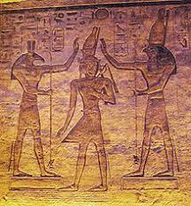

Set was one of the most important members of the honor in the myth of Isis and Osiris . He was the one who killed his brother Osiris and thus became the god of evil and violence. He married his sister Nephthys and was killed by Horus , his nephew Osiris . According to ancient Egyptian religious myth, the god Geb , the god of the earth, was married to the sky goddess Nut , and he had four children with her: Isis , Osiris, Set, and their sister Nephthys . Isis married her brother Osiris, and Set married his sister Nephthys , but Set was jealous of Osiris and his wife Isis. Set was mentioned in one of the myths in ancient Egypt and was considered a symbol of strength and determination. Osiris was his brother. According to religious legend, Set the Powerful killed his brother Osiris, who was kind and just, out of envy, and after killing him, he distributed the body parts throughout Egypt. Isis was the wife of Osiris, so she collected his body parts - this is considered the first process of embalming the dead in history - and had intercourse with the body of Osiris, then she gave birth to a son, Horus , who wanted to take revenge on his uncle Set and avenge his father. Therefore, Horus is sometimes called “his father’s protector” or “his father’s avenger.” In that battle, Horus lost his left eye. He assumed the throne of Egypt. Osiris became the god of reckoning in the afterlife, and Horus became the king of this world. As for Set , he was glorified again by the Pharaohs of Egypt in the eras of the New Kingdom, and they used to seek help from him as the god of power, oppression, and victory. They offer sacrifices to him to help them fight their enemies. I attributed to him great victories. Some of the Pharaohs of Egypt in that era also took their name from the name Set . The Pharaoh of Egypt was represented by Horus as the god of rule on earth at a time when the ancient Egyptian believed that his father, the god Osiris , was the one who would meet the dead in heaven and take account of what they had done in this world. Osiris is assisted in this by the four younger sons of Horus, namely: Hapi
From Geb, the earth god, and Nut, the sky goddess came four children: Osiris, Isis, Set and Nepthys. Osiris was the oldest and so became king of Egypt, and he married his sister Isis. Osiris was a good king and commanded the respect of all who lived on the earth and the gods who dwelled in thenetherworld. However, Set was always jealous of Osiris, because he didn't command the respect of those on earth or those in the netherworld. One day, Set transformed himself into a vicious monster and attacked Osiris, killing him. Set then cut Osiris into pieces and distributed them throughout the length and breadth of Egypt. With Osiris dead, Set became king of Egypt, with his sister Nepthys as his wife. Nepthys, however, felt sorry for her sister Isis, who wept endlessly over her lost husband. Isis, who had great magical powers, decided to find her husband and bring him back to life long enough so that they could have a child. Together with Nepthys, Isis roamed the country, collecting the pieces of her husband’s body and reassembling them.
Once she completed this task, she breathed the breath of life into his body and resurrected him. They were together again, and Isis became pregnant soon after. Osiris was able to descend into the underworld, where he became the lord of that domain. The child born to Isis was named Horus, the hawk-god. When he became an adult, Horus decided to make a case before the court of gods that he was the rightful king of Egypt, not Set, was the rightful king of Egypt. A long period of argument followed, and Set challenged Horus to a contest. The winner would become king. Set, however, didn't play fair. After several matches in which Set cheated and was the victor, Horus’ mother, Isis, decided to help her son and set a trap for Set. She snared him, but Set begged for his life, and Isis let him go. When he found out that she had let his enemy live, Horus became angry with his mother, and rages against her, earning him the contempt of the other gods. They decided that there would be one more match, and Set would get to choose what it would be. Set decided that the final round of the contest would be a boat race. However, in order to make the contest a challenge, Set decided that he and Horus should race boats made of stone. Horus was tricky and built a boat made of wood, covered with limestone plaster, which looked like stone. As the gods assembled for the race, Set cut the top off of a mountain to serve as his boat and set it in the water. His boat sank right away, and all the other gods laughed at him. Angry, Set transformed himself into a hippopotamus and attacked Horus’ boat. Horus fought off Set, but the other gods stopped him before he could kill Set. The other gods decided that the match was a tie. Many of the gods were sympathetic to Horus, but remembered his anger toward his mother for being lenient to Set, and were unwilling to support him completely. The gods who formed the court decided to write a letter to Osiris and ask for his advice. Osiris responded with a definite answer: his son is the rightful king, and should be placed upon the throne. No one, said Osiris, should take the throne of Egypt through an act of murder, as Set had done. Set had killed Osiris, but Horus did not killed anyone, and was the better candidate. The sun and the stars, who were Osiris’ allies, descended into the underworld, leaving the world in darkness. Fi-nally, the gods agreed that Horus should claim his birthright as king of Egypt.